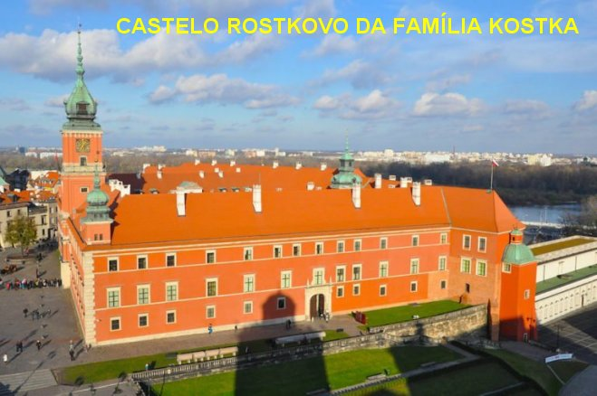
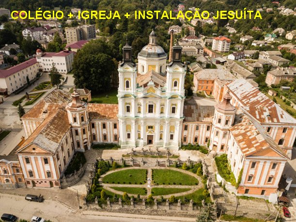
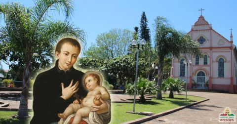
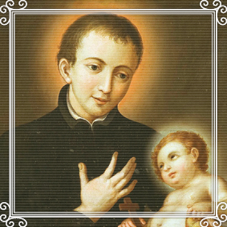

“O SINAL DE DEUS”
FAMÍLIA E NASCIMENTO
Estanislau Kostka nasceu no Castelo de
Rostkowo, no Condado de Prasnitz, na Polônia, no dia 28 de outubro de 1550. Seu pai
era Senador do Reino da Polônia
(1385–1569), era o Senhor Zakroczym, e sua mãe era a
Senhora Magorzata Kryska de Drobniy (Margaret de Drobni Kryska), irmã e sobrinha de
Príncipes da Moldávia e também tia do célebre chanceler da Polônia, Feliks Kryski.
O casal possuía uma sólida e competente vida familiar e eram religiosos que
praticavam com fidelidade o cristianismo. Estanislau foi o segundo dos sete
filhos da família, onde haviam rapazes e moças. Todavia o nascimento de
Estanislau ocorreu envolto em certo mistério, pois por incrível que possa
parecer, a criança trazia no peito três cruzes vermelhas de origem inexplicável.
O Pai homem influente e Senador do Reino Polonês, por todos os meios, quis
interpretar aquelas três cruzes rubras, como sinais de façanhas e glórias que
serão alcançadas pelo filho que será um grande conquistador; e sempre
imaginando, concluía com otimismo que aqueles três sinais vermelhos
representavam três preciosas qualidades que iriam ajudar militarmente o Reino
Polonês e também, aumentar a grandeza da família, que naquela época já era uma
das mais famosas e influentes na Polônia.
Por outro lado, a senhora Margarida,
foi sempre uma mãe carinhosa com um profundo sentimento amoroso, que exercitava no
quotidiano o seu carinhoso coração materno verdadeiramente religioso, imaginando
que as três cruzes vermelhas no peito de seu filho era um sinal do Céu, indicando
que aquele menino estava predestinado a ser algo importante pela Santíssima e
Suprema Vontade de DEUS.
Na verdade, a família
sempre permaneceu unida, crescendo em idade e sabedoria, cada membro se
preocupando em vencer as próprias dificuldades da existência, a fim de construir
o projeto de seu futuro. Em casa, os dois irmãos mais velhos: Paul e Estanislau,
embora tivessem gênios bem diferentes, estudaram e seguiram todas as matérias do
curso com competência, firmeza e até com certa severidade, em companhia dos
demais irmãos e irmãs; os resultados naturalmente foram os melhores, onde também
sobressaiu as magníficas qualidades do jovem Estanislau, que além dos sábios
conhecimentos adquiridos, espiritualmente anexou outras preciosidades ao seu
caráter: Piedade, Modéstia, Temperança e Submissão. O seu irmão mais velho, Paul
era mais autoritário e não evoluiu em sua formação espiritual numa intensidade
desejada, embora fraternalmente convivesse respeitosamente no grupo familiar,
vivendo todos juntos e unidos no mesmo ideal cristão.
EM VIENA, NA ÁUSTRIA

No dia 25 de julho de1564,
os dois irmãos Paul e Estanislau chegaram a Viena, na Áustria acompanhados do seu
tutor John Bilinski, para frequentar a faculdade jesuíta que foi aberta e já estava
em pleno funcionamento a quatro anos. Estanislau logo se destacou entre os seus
colegas de classe durante os três anos do Curso Escolar, não apenas por sua facilidade
em aprender os diversos assuntos estudados, mas por sua amabilidade e permanente
alegria interior de sempre servir, sobretudo, pelo seu crescente fervor religioso
e dedicada piedade cristã. Este procedimento se tornou tão admirável que anos depois
da sua morte, o seu irmão Paul, convocado para depor no Processo Religioso de Beatificação
de Estanislau, disse aos membros da Comissão: "Estanislau se dedicou tão intensamente às coisas espirituais que frequentemente
ficava inconsciente, particularmente quando rezava na Igreja dos Padres Jesuítas em Viena".
Por outro lado, uma
das práticas devocionais que logo ele acolheu com muito fervor em Viena foi a
“CONGREGAÇÃO DE SANTA BÁRBARA E DE NOSSA
SENHORA, A MÃE DE DEUS”. Aliás, a Devoção a NOSSA
SENHORA ele já cultivava, considerando o fato de que a SANTÍSSIMA VIRGEM MARIA era a
Patrona da “Companhia de JESUS”
na Itália, e por isso mesmo, desde o inicio
quando se manifestou o desejo de ser sacerdote, se consagrou a VIRGEM MARIA, como um
verdadeiro apóstolo Jesuíta, e também, porque sempre amou a MÃE DE DEUS. Assim, em
agradecimento a todos os favores que recebia de NOSSA MÃE SANTÍSSIMA e pelo carinho
de SANTA BÁRBARA, ele não perdia uma oportunidade favorável de sempre agradecer e
evidenciar, a sua particular atenção e seu especial amor a NOSSA SENHORA
e a SANTA BÁRBARA, exaltando com alegria e sempre divulgando o grande carinho que
mantinha por ELAS.
OS ESTUDOS
Todavia, poucos meses depois
surgiu uma dificuldade abominável, o Imperador da Áustria, alimentando uma
incompreensível antipatia contra a Companhia de Jesus, passou a cometer uma
série de abusos contra a batalhadora Ordem Religiosa instituída por Santo Inácio
de Loyola, inclusive chegando ao absurdo de requisitar o prédio usado pelo
Colégio dos Jesuítas, onde também residiam aqueles jovens que vieram de longe e
ali moravam e estudavam, para ser utilizado
como dependência
oficial de um setor da Administração Austríaca. E sem dar prazo para cumprir a
determinação do Imperador, a Administração Austríaca cuidou de fazer uma desocupação
imediata, provocando uma incrível balburdia, uma inoportuna e descontrolada
movimentação, com os estudantes procurando desesperadamente outro local para moradia,
recorrendo a pensões e casas residenciais, a fim de conseguirem um local
adequado que lhes servisse de residência e estudo, porque o prédio da Faculdade
já estava sendo ocupado. A administração Jesuíta sem condições de arranjar outro
prédio de imediato deixou os jovens livres para procurar e se instalar nos
locais de suas preferências, como residências particulares, pequenas pensões,
imóveis a serem alugados, onde os estudantes iam viver sem possuir um orientador
profissional e disciplinador, ou seja, os jovens ficaram longe do preparo e da
vigilância psicológica dos mestres e do próprio educandário, vivendo livremente
o dia a dia, em contato direto com os acontecimentos quotidianos, onde
periodicamente desponta e quer interferir a tentação diabólica que sempre é um
perigo eminente.
Mas os jovens buscando
solucionar as suas dificuldades não pensavam nas possibilidades negativas. Iam
se ajeitando nas casas disponíveis nos bairros da cidade. Os dois irmãos Paul
e Estanislau também com o mesmo problema, encontraram um apartamento num bairro da
cidade que se revelou em ótimas condições e eles gostaram; era um imóvel de
propriedade de um príncipe luterano. Em face da excelente localização, os dois
irmãos concordaram em habitá-lo em companhia do tutor. A convivência inicial foi
boa e objetiva, e eles se auxiliavam mutuamente. Todavia, na continuidade dos
meses, o irmão mais velho que já havia sondado a região onde moravam, na
companhia do tutor, saia para passear e sempre regressavam ao lar bem tarde, ou
melhor, quase sempre de madrugada, conforme eles mesmos comentavam, porque
estavam passeando e se divertindo com as namoradas.
Estanislau continuava com o
mesmo comportamento: diariamente estudava os conteúdos das matérias ensinadas
pelo professor no Colégio, reservando um horário necessário as suas orações e as
leituras sobre os assuntos religiosos que gostava de pesquisar.
Passados os primeiros meses,
Paul e o tutor, cismaram de convencer Estanislau a lhes fazerem companhia nos
passeios noturnos e nas diversões com as moças, argumentando que ele precisava
de se distrair, porque era necessário para a sua própria vida de jovem.
Estanislau agradecia, mas confirmava que estava muito bem e queria mesmo era
aproveitar o tempo de cada dia, realizando pesquisas e estudando um pouco mais.
A partir desta época Paul
passou a implicar com o procedimento de seu irmão, inclusive aplicando-lhe apelidos
pejorativos. Com o passar dos dias, o tutor Bilinski
querendo colaborar
para a boa harmonia dos irmãos, também recomendava que Estanislau fizesse um
horário de recreio em seus estudos, para sair na companhia do irmão e desfrutar
das alegrias da juventude, nos passeios, nas brincadeiras, nas festinhas, etc.
Todavia Estanislau continuava indiferente aos convites, permanecendo
tranquilo, lendo e pesquisando nos livros. E assim, depois de muitos convites
feitos e rejeitados pelo santo, o tutor, sem ofender Estanislau passou a elogiar
Paul, enaltecendo a sua conduta, embora ele gostasse de se divertir com as
moças. E agora, revestidos com uma boa dose de raiva, a dupla “da alegria”
desencadeou censuras e incomodas criticas mais severas contra Estanislau, por
causa dos estudos que ele não cessava de desenvolver e principalmente, pela
grande devoção e religiosidade, que em todas as ocasiões lhe permitia demonstrar
um grande e carinhoso amor a JESUS. Aquelas críticas covardes e deploráveis que
os dois companheiros de moradia faziam a Estanislau, com o objetivo de afastá-lo
do contínuo estudo bíblico e de transformá-lo em companheiro para as farras
noturnas que realizavam, na verdade, estavam transformando o viver do tranquilo
e compenetrado Estanislau, num terrível e abominável ambiente doméstico. Às
vezes, além das discussões e dos impropérios, Paul também agredia a seu irmão
com socos, tapas e severas provocações. Certo dia, em resposta às agressões de
Paul, tanto as físicas como as verbais, que eram sem dúvida, as mais venenosas
insinuações tentando estimular o irmão a frequentar à corte austríaca, justamente
com o objetivo de ampliar o campo das suas farras, o santo e penitente Estanislau
amando os seus propósitos cristãos, olhou decidido e sério para o seu irmão
Paul, e com palavras firmes e fortes, disse-lhe: “Eu nasci para as coisas eternas e não para as coisas
do mundo”.
O CHAMADO DIVINO
Verdadeiramente, nessa
época, Paul estava completamente a deriva do ideal cristão, que as pessoas de
caráter normalmente cultivam, porque conduz o espírito a uma verdadeira vida,
como JESUS nos ensinou, ou seja, existindo e amando como DEUS sempre nos amou.
No projeto Divino para a humanidade, o CRIADOR idealizou que todas as pessoas ao
nascer tivessem um “Corpo
e uma Alma”. O “Corpo”
nasce do relacionamento amoroso dos pais. A
“Alma” vem de DEUS, é invenção Divina,
é o “sopro misterioso do
SENHOR” que dá a “vida” a cada pessoa
que nasce. Isto significa dizer que sem a “Alma”, ninguém tem vida. E por outro
lado, a “Alma”
sendo criação Divina, vem para o “Corpo” com as graças
e virtudes dadas pelo SENHOR, que são preciosos benefícios e dons, necessários a
cada pessoa, os quais atuarão para construção espiritual de cada ser humano, homem
e mulher, completando e dando vida ao “Corpo” que será um “ser”(homem ou mulher)
inserido no Livro da Vida com uma missão a cumprir. E como é absolutamente compreensível
e natural, ao longo da existência, cada pessoa deverá cultivar e desenvolver os dons
recebidos de DEUS, fazendo-os luzir e frutificar no direito e na razão, sabendo
escolher e discernir entre o
“bem” e o “mal”, de modo
a construir o caminho da sua vida, respeitando e cultivando os parâmetros da moral,
da fidelidade, exercitando a amizade e o bom entendimento entre as pessoas, e
sobretudo, se mantendo em permanente ligação com o DEUS DA VIDA. Com o maior
empenho, estimular a sua amizade e o seu amor agradecido ao SENHOR, e
primordialmente revelar que aprendeu a discernir o caminho correto, buscando
cultivar e desenvolver os santos ideais. Concluída a missão existencial,
a graça Divina envolverá em plenitude o coração do filho competente, ao
mesmo tempo em que a bondade do SENHOR determinará o lugar onde a infinita
misericórdia do DEUS DA VIDA, reservou para aquele filho fiel e amoroso, que
soube dar valor a vida que ganhou, cumprindo com empenho e ardor, a sua
missão existencial. Significa dizer que tanto o homem como a mulher, são
convidados a percorrer com seriedade, respeito e muito amor, o caminho da
sua existência, desenhando um percurso repleto de amizades e de bons exemplos,
na estrada do direito, da justiça e do amor fraterno, empenhando-se em servir
e agradecer a DEUS, a vida que ELE nos deu e a felicidade que desfrutaremos
no Eterno Paraíso Divino.
uma verdadeira vida,
como JESUS nos ensinou, ou seja, existindo e amando como DEUS sempre nos amou.
No projeto Divino para a humanidade, o CRIADOR idealizou que todas as pessoas ao
nascer tivessem um “Corpo
e uma Alma”. O “Corpo”
nasce do relacionamento amoroso dos pais. A
“Alma” vem de DEUS, é invenção Divina,
é o “sopro misterioso do
SENHOR” que dá a “vida” a cada pessoa
que nasce. Isto significa dizer que sem a “Alma”, ninguém tem vida. E por outro
lado, a “Alma”
sendo criação Divina, vem para o “Corpo” com as graças
e virtudes dadas pelo SENHOR, que são preciosos benefícios e dons, necessários a
cada pessoa, os quais atuarão para construção espiritual de cada ser humano, homem
e mulher, completando e dando vida ao “Corpo” que será um “ser”(homem ou mulher)
inserido no Livro da Vida com uma missão a cumprir. E como é absolutamente compreensível
e natural, ao longo da existência, cada pessoa deverá cultivar e desenvolver os dons
recebidos de DEUS, fazendo-os luzir e frutificar no direito e na razão, sabendo
escolher e discernir entre o
“bem” e o “mal”, de modo
a construir o caminho da sua vida, respeitando e cultivando os parâmetros da moral,
da fidelidade, exercitando a amizade e o bom entendimento entre as pessoas, e
sobretudo, se mantendo em permanente ligação com o DEUS DA VIDA. Com o maior
empenho, estimular a sua amizade e o seu amor agradecido ao SENHOR, e
primordialmente revelar que aprendeu a discernir o caminho correto, buscando
cultivar e desenvolver os santos ideais. Concluída a missão existencial,
a graça Divina envolverá em plenitude o coração do filho competente, ao
mesmo tempo em que a bondade do SENHOR determinará o lugar onde a infinita
misericórdia do DEUS DA VIDA, reservou para aquele filho fiel e amoroso, que
soube dar valor a vida que ganhou, cumprindo com empenho e ardor, a sua
missão existencial. Significa dizer que tanto o homem como a mulher, são
convidados a percorrer com seriedade, respeito e muito amor, o caminho da
sua existência, desenhando um percurso repleto de amizades e de bons exemplos,
na estrada do direito, da justiça e do amor fraterno, empenhando-se em servir
e agradecer a DEUS, a vida que ELE nos deu e a felicidade que desfrutaremos
no Eterno Paraíso Divino.

PRÓXIMA PÁGINA
RETORNA AO ÍNDICE